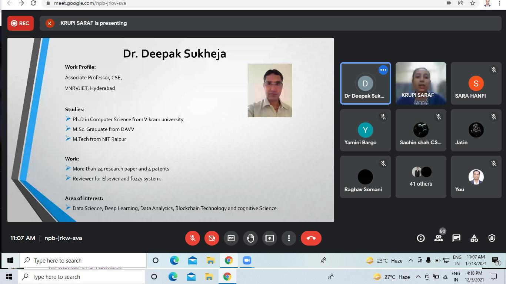

Computer Science.
Workshop on Git and GitHub
AITR ACM Student chapter hosted an Event “Git and GitHub” for the session 2021-22. The session was
conducted in order to spread the knowledge of Git and GitHub to the Students with that making them
clear about the difference between Git and GitHub to reduce their unproductive and hectic work, The
basic idea behind this workshop is to familiarize students with making a repository on Git(Open
source distributed system) so that they can add their files online and track the changes in the code
easily, Collaborate on code for the rest of years of graduation and so on and so forth..
Visit The Event..

Webinar On Blockchain
WAs the anchor Ms. Krupi Saraf introduced the speaker of the session Dr. Deepak Sukheja,
wholeheartedly thanked the entire Acropolis Group of Institutions for inviting him as the chief of
this webinar. He began his speech by stating the objective of the webinar which was to enlighten the
students with the fundamentals and key concepts of Blockchain technology. With his informative
presentation he elaborated on all the topics related to block chain and its real world applications.
The presentation also included flowcharts and diagrams to make each and every idea clear. At the end
of the session the students were clear with all the doubts in their mind related to this topic.
Visit The Event..
Tata Crucible Campus Quiz
Tata Crucible Campus quiz, a national level event, gives platform to the college students to utilize
their store of wisdom and knowledge, and win exciting prizes. This year regional level competition
was organized in Indore at DAVV Auditorium. More than 200 teams of various institutes participated
in the quiz. From Acropolis 24 students under the guidance of Prof. Sumitra Joshi (HoD-Humanities)
participated in the quiz enthusiastically and performed well. Aditya Pawar of CS I Yr. won the prize
of ‘The Best Twitter’. All the students found the event inspiring and expressed their wish to attend
such events in the future whenever any opportunity comes.
Visit The Event..